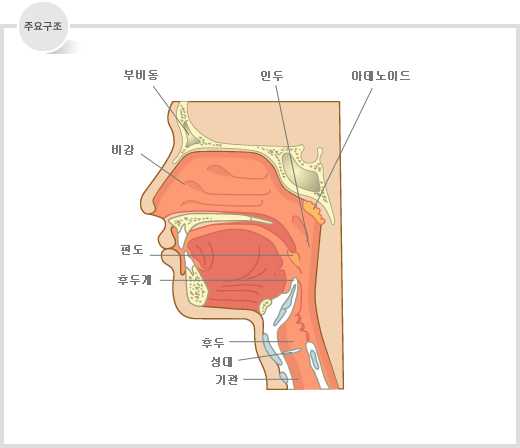

- 발성
- 호흡
- 두성의 이해
음악적으로 발성이란 가창 시 올바른 소리를 내기 위한 방법론을 뜻한다. 단어의 뜻풀이를 그대로 하자면 목소리를 내다. 가창에 있어서 감성이나 톤, 박자, 리듬감 등과 함께 매우 중요한 부분으로 평가받고 있다.
주요 발성 용어들은 성악 용어가 많다. 즉, 이런 용어들은 개성을 중요시하는 실용음악의 탄생 이전인 16세기부터 정립되었다.[1] 그러나 당시의 용어들은 과학적인 연구방법론이 아닌 성악가의 느낌에 의존한 것으로[2] 과학적으로 증명된 것은 비교적 최근의 일이다. 때문에 과거엔 감각에 의존한 비과학적인 발성 이론도 많았으나[3] 현대의 음성학적 관점에선 비과학적인 말로 치부되고 있다
호흡
호흡은 음성을 만드는 데 가장 중요한 에너지 공급원이다. 18세기 후반 유명한 카스트라토이자 성악 교사였던 가스파로 파키에로티 (Gasparo Pacchieroti, 1740 ~ 1821)는 "호흡과 발음에 대하여 잘 아는 사람은 노래를 잘하는 법을 아는 사람이다." 라고 하였는데, 이 말을 정확히 누가 했는지는 알려져 있지 않으나 그가 자주 인용했던 말이다. 성악을 공부하는 학생들의 가장 큰 숙제는 호흡에 대한 확실한 원리를 이해하는 것과 그것을 실행에 옮기는 일이다. 성악인들 사이에 많이 전해지는 말 중 호흡이 발성의 80~90%를 차지한다는 말인데 이것은 호흡의 중요성을 상징적으로 표현한 말이다.
더불어 복식호흡(횡격막 호흡)만으로는 노래에 필요한 공기의 양이 부족할 수 있어, 필요에 따라 늑간근을 활용하여 흉복식호흡을 하는 것이 노래에 있어 가장 이상적인 호흡이라고 할 수 있겠다.
두성
음(두성)을 낼 때 윤상갑상근(CT, cricothyroid)의 수축으로 갑상연골이 앞으로 기울어지면서 성대의 길이가 늘어나게 된다. 그러면 성대의 긴장도(tension)가 높아지고, 진동 부위의 접촉면적이 얇아진다. 따라서 두성은 성대의 상연만 접촉하는 소리이다. 두성, 즉 Head voice라는 이름은 이 발성을 구사할 때 소리가 마치 위, 머리 쪽에 있는듯한 느낌을 받기 때문에 붙여진 추상적인 명칭이다. 성대음이 입 밖으로 방사될 때까지 성대음을 증폭시키고, 필터링 시키는 공간은 '성도'이다. 실제로 성대음이 머리의 공간(전두동과 같은)에서 공명되는 것은 아니다. 달리 말하면 머리에 마이크를 갖다 댄다고 나는 소리가 아니다. 이 소리는 마치 가성과 같이 들리기 때문에 남자에게는 팔세토(falsetto, false voice, 가성)라고 불렸으며 여자에서만 두성(head voice)라고 불렸다. 그리고 대신 남자의 우렁찬 고음을 두성이라고 불렀는데 실제 그 소리는 중성(middle voice, 믹스보이스)이다.
